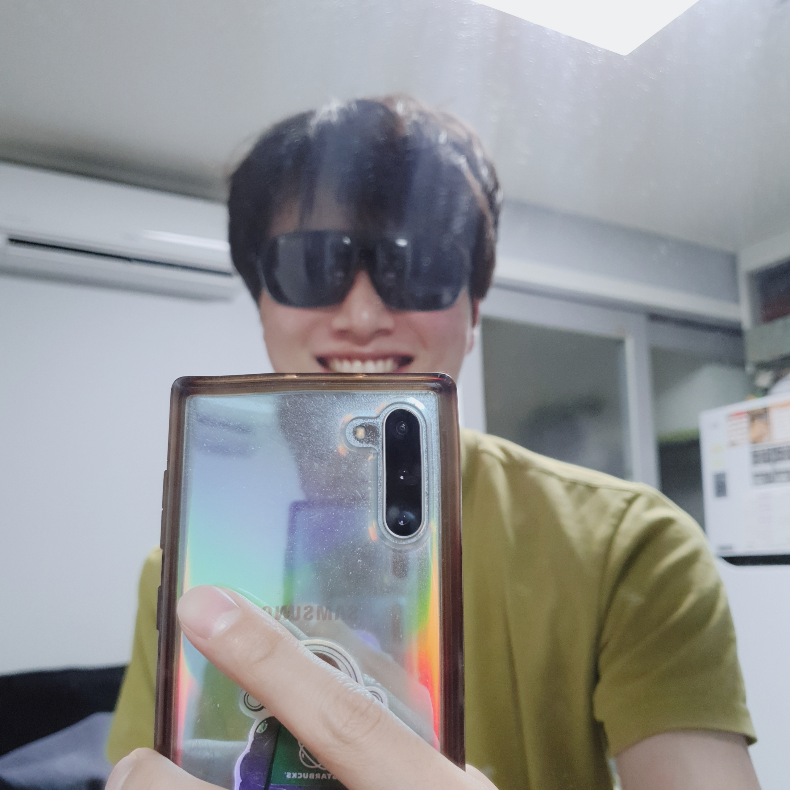

Seungman Choi
Tel: +82-10-4405-7581
Email: seungman@kaist.ac.kr
About
Publications
International Journal
- (In Preparation) B. Kim*, S. Choi*, Y. W. Kim, Y.-J. Kim and S.-W. Kim, “Opticsless Control of Extreme Ultraviolet Beam based on High Harmonic Generation from Solids.” *equally contributed to this work.
- (In Preparation) Y.W. Kim*, B. Kim*, S. Choi*, H. K. Nam, H. Kim, Y.-J. Kim and S.-W. Kim, “Spectral Control of High harmonic Generation via Tailoring Pulse Propagation in Solids.” *equally contributed to this work.
- (In Preparation) S. Choi, N. Tottori, T. Nisisako, “Soft Step Emulsification for Actively-tunable Droplet.”
- S. Choi, K. Wakabayashi, S. Saito, “Development of Bipolar Electrostatic Chuck Module Having Array of Beam Assembly Using Lithography Technique”, Journal of Micromechanics and Microengineering (JMM), 2018, 28.12: 125011.
Patent
- T. Nisisako, S. Choi and N. Tottori, "マイクロ流路乳化デバイス", Application num.: 2018-036016, Patent num.: 2019-150748
International Proceedings
- S. Choi, Y.W. Kim, B. Kim, H.K. Nam, Y.-J. Kim and S.-W. Kim, “High Harmonic Generation from Bulk Crystals using Tailored Driving Femtosecond Laser Pulse”, 2020 International Symposium on Precision Engineering and Sustainable Manufacturing (PRESM 2020), Online Symposium, Nov. 15-18, 2020.
- S. Choi, N. Tottori and T. Nisisako, “Mechanically and Directionally Tunable Soft Step Emulsification”, The 22nd International Conference on Miniaturized Systems for Chemistry and Life Sciences (MicroTAS2018), Kaohsiung, TW, Nov. 11-15, 2018.
- S. Choi, K. Wakabayashi and S. Saito, “Development of Bipolar Electrostatic Chuck Module Having Array of Beam Assembly Using Lithography Technique”, 2017 Materials Research Society Fall meeting (MRS 2017), Boston, MA, USA, Nov. 26-Dec 1, 2017.
- S. Choi, N. Tottori, R. Zhang and T. Nisisako, “A Soft and Disposable Step-emulsification Device for Generating Monodisperse Emulsions and Particles”, The 7th International Conference of Asian Society for Precision Engineering and Nanotechnology (ASPEN 2017), Seoul, Korea, Nov. 14-17, 2017.
Domestic Proceedings
Grants & Awards
- ITO Educational Foundation Scholarship (JPY 180,000 per month)
Apr 2017 – Mar 2019
ITO Foundation for International Education Exchange, JP.
- Korea-Japan Join Government Scholarship Program (JPY 130,000 per month)
Apr 2013 – Mar 2017
The Korean Government and The Japanese Government, KR&JP.
- Foreign Tour Business Grant (JPY 197,000 once)
Aug 2018
The Precise Measurement Technology Promotion Foundation (PMTP-F), JP.
- MutoEiji Award (High honor in mechanical engineering department)
Mar 2017
The Japan Society for Design Engineering (JSDE), JP.
Educational Background
- M.S. in Mechanical Engineering
Apr 2017 – Mar 2019
Tokyo Institute of Technology, Tokyo, Japan
Thesis: Elastically deformable soft step emulsification for actively-tunable droplet.
Advisor: Prof. Takasi Nisisako
- B.S. in Mechanical and Intelligent Systems Engineering
Apr 2013 – Mar 2017
Tokyo Institute of Technology, Tokyo, Japan (GPA 3.69/4.00)
magna Cum Laude in 4 years (Top 10%)
Thesis: Development of bipolar electrostatic chuck module having array of beam assembly using lithography technique.
Advisor: Prof. Shigeki Saito
- Kyunghee University and Tokyo Institute of Technology
Apr 2012 – Mar 2013
Preparatory Education (Korea-Japan Joint Government Scholarship Program)
Studied Japanese, basic physics, and basic mathematics for 6 months at each institute.
Contact Information
Seungman Choi
Technical Researcher
Mechanical Engineering Research Institute,
Korea Advanced Institute of Science and Technology (KAIST),
335 Gwahangno, Guseong-Dong, Yuseong-Gu, Daejeon 305-701, Republic of Korea
Tel: +82-10-4405-7581
Email: seungman@kaist.ac.kr